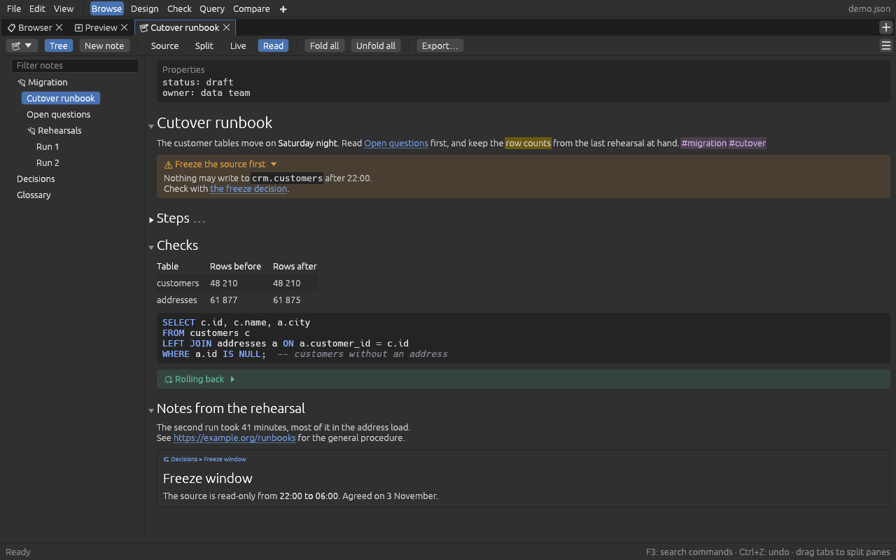
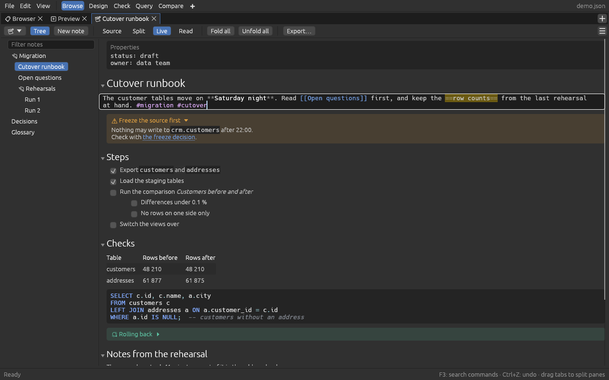

Notes
Pages of Markdown that travel with the project.
A project carries its own notes: pages of Markdown for what was decided, what to check before a load, how a run went. They are kept in the project file, in folders, so they travel with the project and every change to them can be undone like any other.

Open them with the + of the tab bar > Notes, or with F3 and "Open note: …". The tree on the left lists the folders and notes; the Tree button hides it.
- New note adds a note beside the open one and lets you name it.
- Right-click a row for New note, New folder, Rename and Delete. Double-click a row to rename it.
- Drag a row onto a folder to move it there, or between rows to put it in that place.
- The box above the tree shows only the notes with that in their name or text.
Four ways to see a note
| Mode | Shows |
|---|---|
| Source | The Markdown as written, lightly coloured: headings, bold, links, tags, code |
| Split | The source above and the note as read below; the divider can be dragged |
| Live | The note as read. Click a paragraph, list or table to edit just that block as Markdown, where it is |
| Read | The note as read, and nothing to edit by accident |

In Live mode the arrow keys move from the first or last line of a block to the block above or below, Escape ends the editing, and a click below the note starts a new paragraph. Task boxes can be ticked in every mode but Source, and the tick is written to the source.
Typing is undone a pause at a time: Ctrl+Z takes back what was typed since the last pause of a second or so.
Folding
In Split, Live and Read a small triangle in the margin folds what stands beside it: a heading folds all under it up to the next heading of its level, a list item its sub-items, and a paragraph, table or block of code itself. Headings always show the triangle, the others when the pointer is over them. Fold all and Unfold all do so for every heading.
A callout written > [!tip]- Title starts folded and > [!tip]+ Title starts open; a click on its title folds it.
What is folded is remembered while the app is open, not in the project file.
What of Obsidian's Markdown is understood
Headings # to ######, paragraphs, a line break at each new line |
yes |
**bold**, *italic*, ~~struck~~, ==highlighted==, `code` |
yes; bold is shown brighter, not heavier |
Lists, numbered lists, nested; tasks - [ ], - [x] and other marks such as - [/] |
yes |
Quotes and callouts > [!note] Title, with + and - |
yes; note, info, tip, success, question, warning, failure, danger, bug, example, quote and their other names |
| Tables | yes; cells are not aligned by the :---: row |
| Code blocks, with SQL coloured | yes |
[[Note]], [[Folder/Note]], [[Note#Heading]], [[Note|shown text]] |
yes; a click opens the note, and a link to a note that is not there makes it |
![[Note]] and ![[Note#Heading]] |
yes: the note, or that section, is shown in place |
[text](https://…) and bare https://… |
yes; opened in the browser |
#tags and #nested/tags |
yes; a click lists the notes with that tag in the tree |
Properties (the --- block at the top) |
shown as written |
Comments %% … %% |
hidden when read |
Images and other attachments,  |
no: shown as their text |
Footnotes, maths $…$, HTML, Heading over ===, [text][ref] links, block links [[Note#^id]] |
no: shown as written |
A link is found by the note's name wherever it is, as in Obsidian, and by its path when two notes share a name. Renaming a note does not rewrite the links to it.
From the rest of the app
A right-click offers Send to new note and Append to, which unfolds into the notes that are open, in these places:
| Where | What the note gets |
|---|---|
| Cells picked in the Preview, the Browser, a Compare result or a step's rows | A table under the columns' names; one cell alone as **column**: value |
| The text of a Query pane | The selection, or the whole query, as a block of SQL |
| A source in the list of sources | What it reads and, once it has been read, its columns and their types |
| A table's title in the Graph | Its columns with their keys, what they refer to, and the tables that refer to it |
| A step on a job's canvas | Its kind, its description and its settings as the project file has them |
| A run in the list of runs | How it ended, its parameter values, and what each step did |
| A row of another list: a check or a message of the Issues pane, a step of a run, an issue of a run in the Job designer, a key or a column in a Data Dictionary keys pane, a column of a comparison | The row as a table under the columns' names. Whole table in the same menu sends every row |
| An answer of the Assistant | The answer as it is |
A new note is named after what was sent, and opens; when a note of that name is there already, the new one gets a number: Parts, then Parts 2. Append to lists the note of every Notes pane, in any workspace or window, the note used last first; the text goes to the end of the one picked, and the panes keep showing what they showed. Either is one step to undo. The address of a database server is never written into a note, for the password it may hold.
Out of the project and into it
Export… writes every note into a folder as a .md file, a folder for each folder of notes; files of the same names are replaced and others left alone. In the browser the files are written to the opened folder or downloaded.
dbdb-cli notes project.json # list the notes
dbdb-cli notes project.json --read "Migration/Cutover runbook"
dbdb-cli notes project.json --export notes/ # write them as .md files
dbdb-cli notes project.json --import ~/vault/ # add a folder of .md files--import takes a folder of Markdown files, an Obsidian vault say, and adds them to the project's notes; hidden folders such as .obsidian are left out.
In the project file
"notes": [
{ "type": "folder", "name": "Migration", "children": [
{ "type": "note", "name": "Cutover runbook", "text": [
"# Cutover runbook",
"",
"Read [[Open questions]] first."
] }
] }
]A note's text is a list of its lines, so that a change shows as changed lines when the file is compared. A name cannot hold / \ : * ? " < > | # ^ [ ], nor start with a dot, so that every note can be a file and the target of a link.
The commands add_note, remove_note, move_note, set_note_text and append_to_note change them (see agents.md); an assistant reads them with show_project.